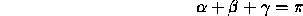
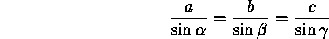
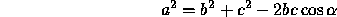
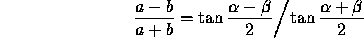
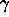
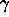

| Triangle |
A triangle is a basic shape of planar geometry. It consists of three straight lines and three angles in between. Figure 1 shows how the sides and angles are usually labeled.
A look into a book about geometry shows that many formulas for triangles exist:




The values of a, b, c, ,  ,
and  form a set of six parameters that fully define a triangle.
If a large enough subset of these parameters is given, the missing ones
can be calculated by using the formulas above.
,
and  form a set of six parameters that fully define a triangle.
If a large enough subset of these parameters is given, the missing ones
can be calculated by using the formulas above.
You are to write a program that calculates the missing parameters for a
given subset of the six parameters of a triangle. For some sets of parameters,
it is not possible to calculate the triangle because either too few is known
about the triangle or the parameters would lead to an invalid triangle.
The sides of a valid triangle are greater than 0 and the angles are greater
than 0 and less than  . Your program should detect this case and output:
"Invalid input." The same phrase should be output if
more than the minimal set needed to compute the triangle is given but the
parameters conflict with each other, e.g. all three angles are given but
their sum is greater than
. Your program should detect this case and output:
"Invalid input." The same phrase should be output if
more than the minimal set needed to compute the triangle is given but the
parameters conflict with each other, e.g. all three angles are given but
their sum is greater than  .
.
Other sets of parameters can lead to more than one but still a finite number of valid solutions for the triangle. In such a case, your program should output: "More than one solution."
In all other cases, your program should compute the missing parameters and output all six parameters.
The first line of the input file contains a number indicating the number
of parameter sets to follow. Each following line consists of six numbers,
separated by a single blank character. The numbers are the values for the
parameters a, , b,  , c, and
respectively. The parameters are labeled as shown in figure
1. A value of -1 indicates that the corresponding parameter is undefined
and has to be calculated. All floating-point numbers include at least eight
significant digits.
, c, and
respectively. The parameters are labeled as shown in figure
1. A value of -1 indicates that the corresponding parameter is undefined
and has to be calculated. All floating-point numbers include at least eight
significant digits.
Your program should output a line for each set of parameters found in the
input file. If a unique solution for a valid triangle can be found for the
given parameters, your program should output the six parameters a,
, b,  , c, , separated by
a blank character. Otherwise the line should contain the phrase
, c, , separated by
a blank character. Otherwise the line should contain the phrase
"More than one solution." or
"Invalid input."
as explained above.
The numbers in the output file should include at least six significant digits. Your calculations should be precise enough to get the six most significant digits correct (i.e. a relative error of 0.000001 is allowed).
4 47.9337906847 0.6543010109 78.4455517579 1.4813893731 66.5243757656 1.0059022695 62.72048064 2.26853639 -1.00000000 0.56794657 -1.00000000 -1.00000000 15.69326944 0.24714213 -1.00000000 1.80433105 66.04067877 -1.00000000 72.83685175 1.04409241 -1.00000000 -1.00000000 -1.00000000 -1.00000000
47.933791 0.654301 78.445552 1.481389 66.524376 1.005902 62.720481 2.268536 44.026687 0.567947 24.587225 0.305110 Invalid input. Invalid input.